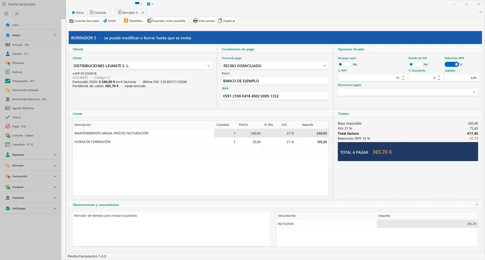
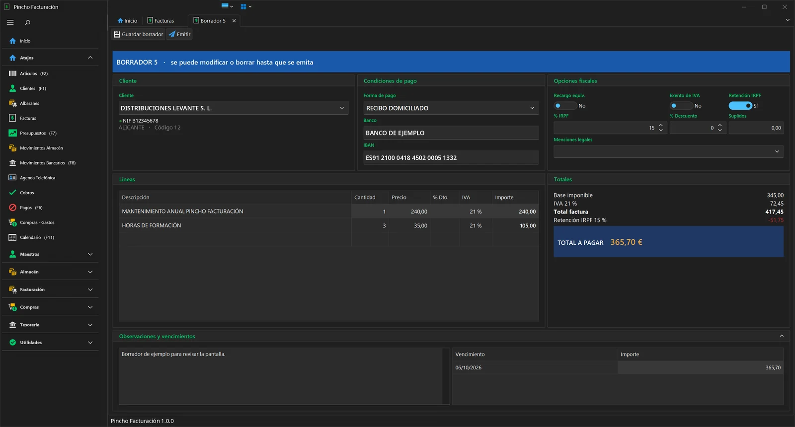
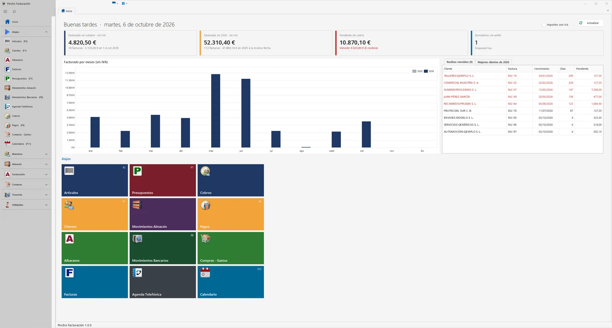
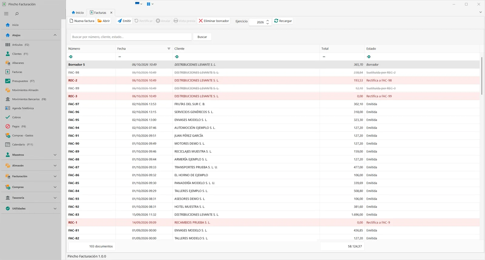

Facturar sin pelearte con el programa
Pincho Facturación lleva tus facturas, albaranes, presupuestos, clientes, cobros y compras en un solo programa para Windows. Está pensado para que cualquiera en la oficina lo entienda a la primera, y ya viene preparado para VERI*FACTU.


Una factura en borrador. Se puede cambiar hasta que se emite. Captura real del programa con datos de ejemplo.
Qué incluye
Todo lo que necesita una pyme o un autónomo para el día a día, desde el primer presupuesto hasta el último cobro.
| Concepto | Detalle |
|---|---|
| Facturas, albaranes y presupuestos | Borradores que puedes retomar, plantillas, duplicar, facturas rectificativas y pasar un presupuesto o varios albaranes a factura. Recargo de equivalencia, IRPF y descuentos. |
| VERI*FACTU | Código QR y huella en cada factura, comunicación con la Agencia Tributaria y el estado de cada envío a la vista. |
| Clientes | Ficha con lo facturado y lo pendiente, histórico de compras, direcciones de envío, documentos, mapa y comprobación del NIF con la AEAT. |
| Cobros, pagos y bancos | Recibos y vencimientos según la forma de pago o a tu medida, anticipos, movimientos bancarios y aviso de lo vencido nada más abrir. |
| Artículos y almacén | Familias, tarifas, códigos de barras, entradas de almacén y seguimiento de cada artículo. |
| Compras y gastos | Las facturas de tus proveedores con su IVA, para saber siempre cuánto gastas y en qué. |
| Informes | Libro de IVA, modelo 347, extractos de clientes y proveedores, balances y resúmenes de facturas, cobros y vencimientos. |
| Envío de documentos | Facturas y presupuestos por correo electrónico o WhatsApp desde la vista previa. Facturas también en inglés y francés. |
| Comodidad | Dictado por voz, atajos de teclado, tema claro u oscuro, menús a la medida de cada usuario y aviso de quién llama. |
Pantallas del programa
Así es Pincho Facturación por dentro. Pulsa en una imagen para verla a tamaño completo.

Tu negocio de un vistazo
Al abrir el programa ves lo facturado este mes y este año, lo que te deben, los recibos vencidos y la evolución por meses. Desde los atajos llegas a cada parte con un clic o con su tecla.

Todas las facturas del año
Borradores, facturas emitidas, rectificativas y sustituidas, cada una con su color. Busca por número, cliente o estado, filtra cualquier columna y emite o rectifica desde la misma pantalla.
Claro u oscuro, a tu gusto
Cada usuario elige el aspecto y los colores del programa. El tema oscuro cansa menos la vista cuando pasas muchas horas delante de la pantalla.
Capturas reales del programa. Los nombres, NIF y cuentas son de ejemplo.
VERI*FACTU, resuelto
La Ley Antifraude obliga a que los programas de facturación garanticen que una factura no se modifica después de emitirla y que cualquiera puede comprobarla. Pincho Facturación lo hace sin pasos de más.
- Cada factura lleva su código QR para que tu cliente la compruebe en la web de Hacienda.
- Una huella encadenada asegura que nada cambia después de emitir.
- El envío a la Agencia Tributaria se hace solo, en segundo plano.
- Ves el estado de cada factura: enviada, pendiente o con algún aviso.
Distribuciones Levante S. L.
| Mantenimiento anual | 240,00 € |
| Horas de formación (3) | 105,00 € |
| IVA 21 % | 72,45 € |
Cómo empezar
Te acompañamos desde el primer día, también si vienes de otro programa.
Hablamos
Nos cuentas cómo trabajas y te enseñamos el programa con ejemplos de tu sector.
Lo instalamos
En tu ordenador o en los de la oficina, con los datos de tu empresa, tus series y tu logotipo.
Pasamos tus datos
Clientes, artículos y proveedores desde tu programa anterior, para seguir sin perder nada.
Seguimos contigo
Asistencia remota cuando la necesites, copias de seguridad y actualizaciones automáticas.
Preguntas frecuentes
¿En qué ordenadores funciona?
En ordenadores con Windows 10 o Windows 11. Puede trabajar en un solo equipo o en varios a la vez dentro de la oficina, compartiendo los mismos datos.
¿Cumple con VERI*FACTU y la Ley Antifraude?
Sí. Las facturas llevan su código QR y su huella, y se comunican a la Agencia Tributaria automáticamente.
¿Puedo traer los datos de mi programa actual?
Sí. Estudiamos tu caso y pasamos clientes, proveedores, artículos y, si se puede, el histórico de facturas.
¿Qué pasa si tengo un problema?
Te atendemos por teléfono o por correo y, si hace falta, nos conectamos a tu ordenador en remoto, siempre con tu permiso, para resolverlo al momento.
¿Se adapta a mi sector?
Tiene modos especiales para algunos sectores, como la fabricación de calzado, y forma parte de la familia de programas Pincho, con programas para TPV, talleres y más.
¿Está ya disponible?
Está en la fase final de desarrollo. Si te interesa, escríbenos y te avisamos para que seas de los primeros en probarlo.
¿Lo vemos juntos?
Cuéntanos a qué se dedica tu empresa y te enseñamos el programa sin compromiso.
correo@octaviogarciaorts.es
Móvil 637 442 106
Teléfono 96 609 11 33